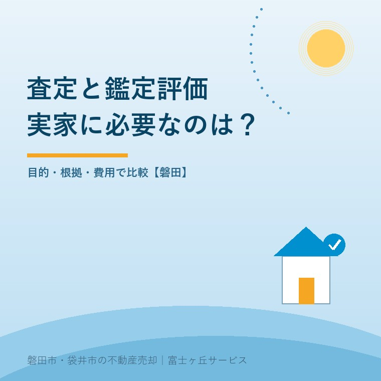
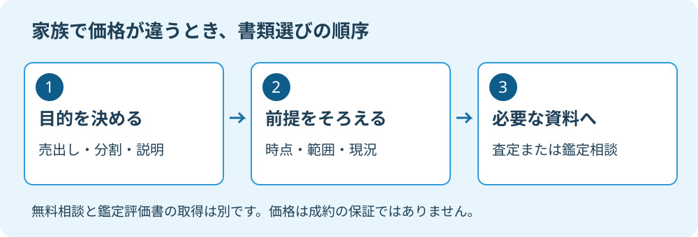

不動産査定と鑑定評価の違い｜磐田の実家で比較
2026年9月13日｜カテゴリ：査定・売却実務

この記事の要点
Q. 実家の値段で家族の意見が違います。査定と鑑定評価のどちらが必要ですか。
売出価格を検討するなら不動産会社の査定、目的を定めて専門的な価格根拠を示したいなら不動産鑑定士への相談が入口です。鑑定評価額も成約を保証しません。無料相談と評価書の取得は別です。磐田市・袋井市・森町では、介護施設の運営から不動産事業を始めた富士ヶ丘サービスのような地域密着の会社に、家族の資料整理から相談できます。
磐田市にある実家について、家族の一人は「この金額では安すぎる」と言い、別の一人は「管理を続けるのは難しい」と考えている。不動産会社の査定書を増やしても、話が進まない場合があります。そのとき、鑑定評価を頼めば答えが一つになるのでしょうか。
大石浩之（磐田市／不動産業）です。宅地建物取引士として私が先に確かめたいのは、値段の高さではなく、その数字を何に使うのかです。売出価格を決めたいのか、家族に価格の根拠を示したいのか。同じ実家でも、依頼する目的が違えば必要な資料は変わります。
査定は販売の判断材料、鑑定評価は経済価値の専門判断
不動産会社の売却査定は、物件の条件や取引事例などを見て、売却の見込みを検討するための価格意見です。一方、国土交通省の案内では、不動産鑑定評価は不動産の経済価値を判定して価額で示すもので、不動産鑑定士が担う専門業務とされています。
査定は、売り方や売出価格の相談につなげやすいのが利点です。道路、境界、建物の状態を確認し、誰が買主候補になるかを検討できます。鑑定評価は、依頼目的と条件を定め、鑑定評価基準等に沿って価格の根拠を説明する資料を求める際の選択肢になります。
| 比較項目 | 不動産会社の査定 | 不動産鑑定士の鑑定評価 |
|---|---|---|
| 依頼の入口 | 売却の見込み・売出価格を考える | 目的を定めて経済価値を判断する |
| 確認したい中身 | 比較事例、現況、販売条件 | 価格時点、対象範囲、評価条件 |
| 費用の聞き方 | 査定料と媒介契約の条件を確認 | 調査範囲、成果物、料金を見積もる |
| 自動的には決まらないこと | 成約価格、買主、売却日 | 家族の合意、税務判断、成約価格 |
私は、査定の役割を小さく見る必要はないと考えます。ただし仲介を受けたい会社が出す資料であることは、売主に伝えておくべきです。売却の相談と営業はつながっています。だから金額だけでなく、比較した物件と値段を調整した理由を示す責任があります。
査定額を高く見せれば売主が喜ぶ場面もあるでしょう。しかし、契約を任せてもらうための数字なら、売主の役には立ちません。査定書の読み方は、不動産会社の査定の仕組みでも説明しています。

磐田の実家は、価格の前提をそろえて比較する
磐田市の実家の価格を比べるときは、評価した日、土地建物の範囲、現況の扱いをそろえます。国土交通省の不動産情報ライブラリも、地価公示等は具体的な条件を持つ地点の価格であり、近隣の土地でも個別の価格形成要因を比較する必要があると説明しています。
たとえば磐田市見付の実家を考える場合でも、同じ「見付」という地名だけで価格を移せません。敷地が面する道路、車の出入り、形状、建物の利用可能性を確かめる必要があります。これは地区の相場を断定しているのではなく、私が個別査定で比較すべきだと考える項目です。
「建物を残す前提の査定」と「解体して更地で渡す前提の査定」を比べても、数字の高低だけでは判断できません。更地渡しに必要な解体費を誰が払うかも併記します。測量や残置物処分についても、金額に織り込んだのか、売主の別負担なのかを聞きます。
私なら家族の希望額を表にし、その隣へ根拠を書いてもらいます。購入時の支払額、近所の売出広告、税の通知書、不動産会社の査定。数字の出どころが違うなら、誰かが間違っていると決める前に、何を測った数字かを分けます。
公示地価、路線価、固定資産税評価額、実際の取引価格を混ぜやすい場合は、実家にある4つの値段を参考にしてください。税のための評価と、買主がその条件で買う価格は、同じとは限りません。
代償分割のために実家の価格を調べる場合は、家族で合意する代償金の基準と相続税評価額を分けてください。 代償分割の不動産評価、2つの価格を混同しないで手順を確認できます。
家族の話合いに鑑定評価を使うなら、目的から決める
家族の話合いで鑑定評価を検討するなら、誰に何を説明するための評価かを依頼前に決めます。国土交通省の価格等調査ガイドラインは、依頼者との間で確定する事項や成果報告書の記載事項を定めています。書類を作る前の条件設定が、使える資料になるかを左右します。
私は、不動産会社から離れた立場の価格説明を得られる点に価値があると考えます。家族の一人が選んだ仲介会社の査定だけでは納得しにくいとき、共通の説明材料を作る道があるからです。依頼先や評価条件を家族で共有してから進める方が、結果の受け止め方も整理できます。
その上で、鑑定評価書があれば家族が必ず同意する、という期待には注文があります。価格の説明と、思い出のある家を手放す気持ちは別です。実家を一人が取得する場合の支払い能力や、維持費を誰が負担するかも、評価額だけでは決まりません。
家族を黙らせるための高い紙なら、私は勧めません。必要なのは、誰が読んでも判断材料が増える資料です。まだ売ると決めていない家族に、評価書を取ったから売ろうと迫る使い方はしない。その順序を私は守りたいと思います。
私にも迷いはあります。家族の話が止まっているなら第三者の評価を入れたい。一方で、費用をかけても解決しない争点なら負担だけを増やしたくありません。だから先に「金額の根拠が足りないのか、売却への同意がないのか」を聞き分けます。
鑑定評価の依頼時は、現地調査の範囲、いつ時点の価格か、土地だけか建物も含むか、成果物の名称、納期と料金を確認します。鑑定士への相談なら何でも同じ評価書になる、とは考えないことです。正式な依頼前に見積もりと業務範囲を受け取ります。
相続税の評価や遺産分割、親族間の売買での使い方は別途検討します。親族間売買の価格と確認事項も合わせて読み、税務・登記・相続の個別判断は専門家に確認を。
浜松の無料相談会は10月2日、予約は9月28日まで
静岡県の2026年7月27日更新の案内によると、静岡県不動産鑑定士協会の無料相談会が2026年10月2日に開かれます。西部会場は浜松商工会議所です。磐田市の実家について鑑定士への相談を検討するご家族にも、相談先の候補になります。
| 項目 | 西部会場の案内 |
|---|---|
| 日時 | 2026年10月2日（金）10時〜16時 |
| 会場 | 浜松商工会議所4階A会議室 |
| 所在地 | 浜松市中央区東伊場2-7-1 |
| 予約締切 | 2026年9月28日（月） |
| 予約先 | 静岡県不動産鑑定士協会 054-253-6715 |
県の案内では、価格、売買、相続などの相談に鑑定士が対応します。ただし、鑑定評価書を無料で交付するとの記載はありません。無料相談を利用できることと、正式な鑑定評価の成果物を受け取れることを分けてください。
私は、この相談を「実家はいくらですか」だけで終わらせない使い方を提案します。「家族の話合いに使う資料が欲しい。今ある査定書で足りるのか、正式な鑑定評価が必要なのか」と聞く。依頼の要否を整理できれば、それだけでも次の費用を判断しやすくなります。
予約枠の空きは本記事では確認していません。相談時間、持参資料、対応できる範囲は、予約時に主催者へ確かめてください。県の表では東部・中部と西部で受付方法が違うため、浜松会場の事前予約を見落とさないようにします。
依頼前に5点を整理。売るかどうかはその後でよい
査定か鑑定評価かを選ぶ前に、実家の資料と家族の疑問を一枚に整理します。私なら、磐田・袋井の売却相談で次の5点を先に確かめ、足りない資料と、専門家に判断を頼む事項を分けます。
- 実家の所在地と登記名義、土地建物の範囲。
- 手元の査定書と、それぞれの査定日・前提条件。
- 家族の希望額と、その根拠にしている資料。
- 売却、保有、家族の一人が取得する案のどれを比べたいか。
- 書類を誰に示し、いつまでに何を決めたいか。
親の介護費用の見通しも絡むなら、価格だけでなく支払い時期を相談してください。富士ヶ丘サービスでは、介護と不動産を一体で相談する立場から、売却準備と家族の段取りを整理します。鑑定評価そのものが必要なら、不動産鑑定士の業務につなぐ話です。
私はこう案内します。今日、家族全員が同じ希望額になる必要はありません。まず、何の価格を比べているかをそろえる。依頼する資料と費用を決めるのは、その後でかまいません。
よくある質問
- 不動産会社の査定書と鑑定評価書は同じものですか。
- 同じものではありません。不動産会社の査定は、売却の見込みや売出価格を考える材料です。鑑定評価は、不動産鑑定士が目的や条件を定め、経済価値を判断する専門業務です。どちらも家族間の合意や、その価格での売買成立を自動的に保証しません。書類の名称だけで選ばず、使う目的と必要な説明を確認します。
- 10月2日の浜松相談会で鑑定評価書を無料でもらえますか。
- 静岡県の案内は不動産の無料相談会であり、鑑定評価書を無料交付するとの記載はありません。西部会場は浜松商工会議所4階A会議室、2026年10月2日10〜16時です。9月28日までに静岡県不動産鑑定士協会へ電話予約します。相談で対応できる範囲や資料、予約枠は主催者へ確認してください。
- 相続の話合いで鑑定評価額をそのまま使ってよいですか。
- 鑑定評価は価格の根拠を示す材料になりますが、遺産分割での扱いや税務上の評価を自動的に決めるものではありません。評価の時点、対象範囲、売却か保有かといった目的をそろえ、家族がどの資料を使うかも相談します。相続税の申告や親族間売買、登記を含む個別判断は、税理士・弁護士・司法書士などの専門家に確認を。

この記事を書いた人：大石浩之（磐田市／不動産業・宅地建物取引士）
富士ヶ丘サービス株式会社。介護施設の運営から不動産事業を始め、磐田市・袋井市・森町で、介護と相続、実家の売却を一体で相談できる窓口を設けています。家族が困らない売却のため、資料と現地の条件を一件ずつ整理します。著者プロフィール
参考にした公式情報
2026年9月13日確認。
本記事は2026年9月13日時点の公開情報と筆者の意見です。制度・数値・開催予定は変更されることがあります。税務・登記・相続の個別判断は、税理士・司法書士・弁護士などの専門家に確認を。